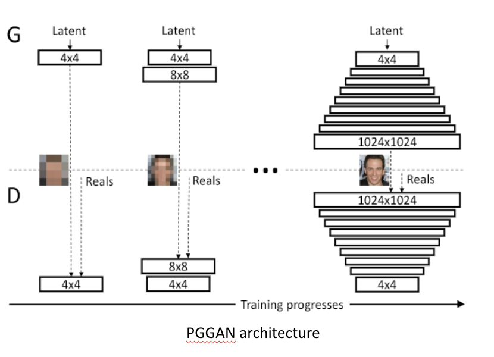
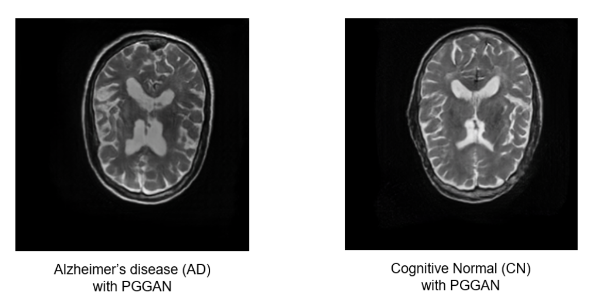
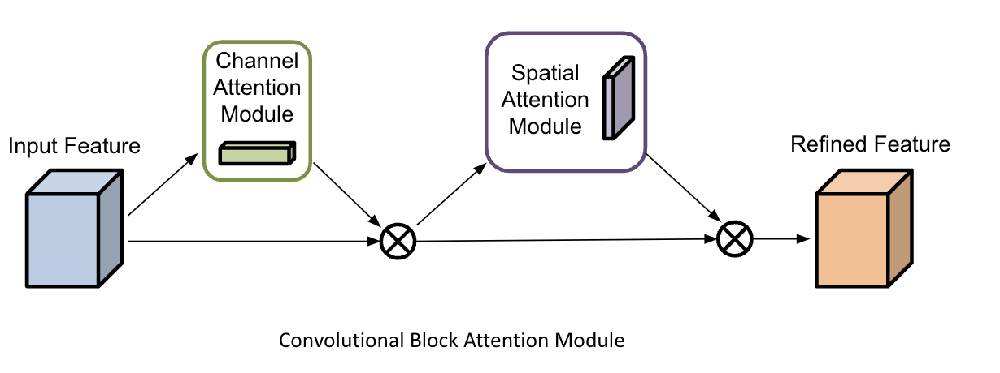
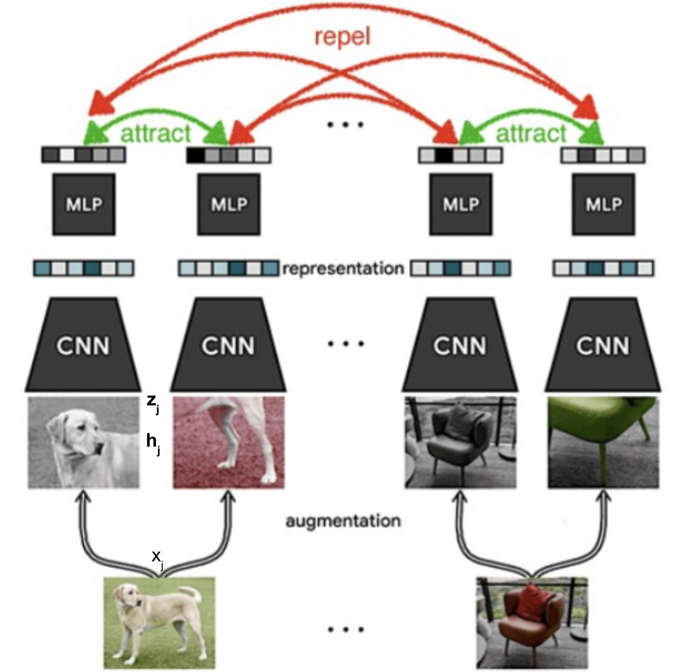
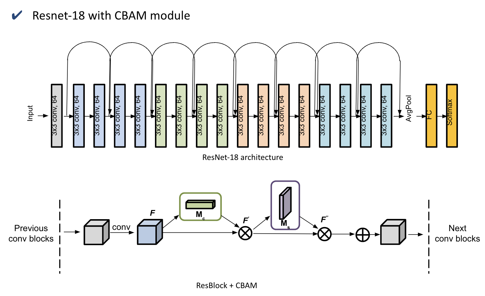
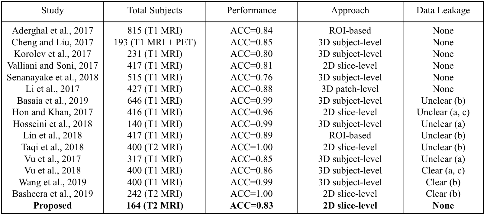
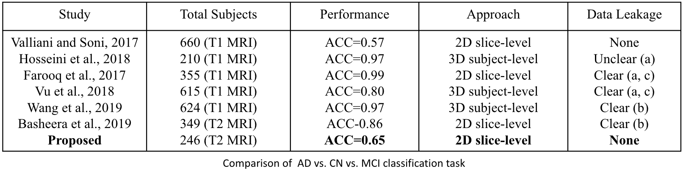

This was my MS thesis project. This project can be further divided into two sub-projects i.e. dealing with medical data scarcity through image synthesis and classification of Alzheimer's disease using deep learning.
Some of the deep learning approaches involved in this project are supervised contrastive learning, transfer learning, multi-scale CNNs, convolutional block attention module (CBAM), Progressive GANs, and SimCLR.
I further investigated how most of the previous approaches are based on large datasets, yet they still suffer from various kinds of biases like data leakage and late split. Such biases can hide the actual performance of the model. I also compare my proposed approach with the previous approaches and show how just by using a small dataset, we achieve comparable performance to the previous methods without any kind of bias.






